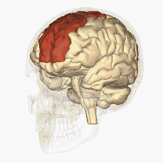

상전두회 (Superior Frontal Gyrus)
한 줄 정의: 전두엽의 위쪽을 이루는 이랑으로, 자기 인식, 말 시작, 작업기억 같은 기능과 관련해 연구되는 영역이다.

쉽게 풀면
전두엽 겉면의 세 이랑 중 가장 위에 있는 이랑이다. 자신에 대해 생각할 때나 말을 꺼낼 때 활동한다고 보고된다.
왜 중요한가
안쪽 부분은 내측 전두회로 따로 부르기도 해서, 논문에서 어느 부분을 가리키는지 확인해야 한다.
어디에 있고 어떻게 생겼나
- 위치: 전두엽의 약 3분의 1을 이루며, 가쪽 경계는 상전두고랑이다.
- 부위 이름: 상전두회의 안쪽(내측) 부분은 내측 전두회라고 한다. 전두엽의 가쪽 부분은 상전두회의 가쪽 부분, 중전두회, 하전두회로 이루어지며, 안쪽 부분은 상전두회의 내측 부분과 대상회로 이루어진다.
맡은 기능
- 자기 인식: fMRI 실험에서 감각 계통의 활동과 함께 자기 인식에 관여한다는 증거가 보고되었다. 내측 부분은 자신의 특성을 평가하는 과제에서 활성화되며, 주요우울장애 환자가 건강한 사람보다 더 넓게 활성화되었다는 연구가 소개된다.
- 언어: 말의 자발성과 말 시작에 관련된다고 여겨진다. 이 영역과 브로카 영역을 잇는 경로가 발견되어 전두 사선 경로(frontal aslant tract)로 이름 붙었다.
- 웃음: 1998년 이츠하크 프리드가 뇌전증 치료 중 한 환자의 왼쪽 상전두회를 전기 자극하자 일관되게 웃음이 일어났다고 보고했다. 전류가 커질수록 웃음이 길어지고 강해졌다.
- 작업기억: 2006년 연구에서 왼쪽 전전두 상전두회 병변 환자가 작업기억 과제에서 대조군보다 낮은 성적을 보였고, 가쪽과 뒤쪽 부분의 기여가 컸다.
연구에서 다루는 방식
- 임상 관련: 상전두회의 피질 두께와 회백질 부피 감소가 ADHD, 파괴적 기분조절부전장애 등 청소년의 심한 짜증과 관련된다는 보고가 있다. 2023년 연구에서는 상전두회 피질 두께와 역치하 사회불안 수준 사이에 양의 상관이 보고되었다.
- 자극 연구: 실어증 환자에게 언어치료와 함께 상전두회에 rTMS를 준 군이 가짜 자극군보다 치료 효율과 언어 개선이 더 컸다는 2023년 연구가 있다.
논문에서는 이렇게 쓰입니다
예시 문장
아래 예문은 용어의 쓰임을 보이려고 만든 것으로, 실제 논문 문장이 아니다.
"뇌전증 수술 중 왼쪽 상전두회를 전기로 자극하자 환자는 웃음의 이유를 매번 다르게 설명하며 눈앞의 그림이나 문장, 주변 사람 탓으로 돌렸다."
자극으로 생긴 웃음에 환자가 그럴듯한 외부 이유를 붙였다는 관찰을 요약한 문장이다.
"심한 무쾌감증이 있는 우울증 환자에서는 왼쪽 상전두회의 효율이 무쾌감증이 없는 환자보다 높았고, 이는 보상성 기전이거나 무쾌감증의 잠재적 생체표지자일 수 있다."
무쾌감증과 상전두회 연결 효율의 관련을 보고하되 해석은 가능성 수준으로 둔 문장이다.
조금 더 깊게 보면
프리드가 기술한 16세 환자 AK는 뇌전증 발작 초점을 찾는 수술 중 왼쪽 전두엽 표면에 전기 자극을 받았고, 약 2×2 cm 영역에서 웃음이 일관되게 나타났다. 웃음에는 즐거움의 느낌이 동반되었고 환자는 매번 다른 이유를 대며 그림, 읽은 문장, 방 안의 사람 같은 외부 자극 탓으로 돌렸다.
웃는 동안에는 말과 손동작이 모두 멈췄다. 작업기억 병변 연구에서는 가쪽과 뒤쪽 상전두회, 주로 전두안구야 앞쪽의 브로드만 영역 8이 결손에 가장 크게 기여했다.
주의할 점
웃음 자극 결과는 뇌전증 수술 중인 한 환자의 보고여서 상전두회가 웃음의 중추라는 뜻으로 일반화하기 어렵다. 피질 두께와 증상의 관계도 방향이 일정하지 않아, 상전두회 위축은 청소년의 심한 짜증과 관련되지만 상전두회 피질 두께는 역치하 사회불안 수준과 양의 상관을 보였고, 모두 상관 보고이므로 인과로 읽지 않는다.
참고 문헌
- Wikipedia contributors. (n.d.). Superior frontal gyrus. Wikipedia.
- Wikipedia contributors. (n.d.). Frontal lobe. Wikipedia.